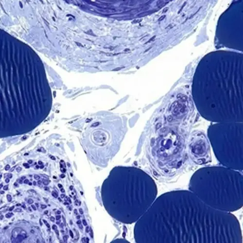
SYN®-AKE — пептид-миорелаксант
Dipeptide Diaminobutyroyl Benzylamide DiacetateСнижает сокращение круговой мышцы глаза и разглаживает мимические морщины у внешних уголков.
BYRAIN · FIRST TRANSFORMATION
Крем-миорелаксант с SYN®-AKE · 15 мл · Швейцария
Разглаживает морщины вокруг глаз, снимает отёчность и тёмные круги без инъекций.
★★★★★ 4,77 · 13 отзывов оставить только при настоящих отзывахЧетыре пептида для трёх задач тонкой кожи век. SYN®-AKE снимает напряжение круговой мышцы глаза, и мимические морщины у внешних уголков разглаживаются. Dipeptide-2 и Palmitoyl Tetrapeptide-7 улучшают лимфодренаж и тонус капилляров: уходят утренние отёки и тёмные круги. Коллагеновые пептиды и керамиды возвращают веку плотность. С первых мимических морщин в 25 лет до нависшего века после 45. Швейцарская формула, активы DSM-Firmenich, Croda и Sederma.
Рассрочка 4 × 4 000 ₽ без переплаты если подключена
Кожа век в 3–4 раза тоньше кожи лица и движется десятки тысяч раз в день. У неё три слабых места: мимические морщины, застой жидкости и слабые капилляры. В формуле у каждого есть свой актив: SYN®-AKE для мышцы, Dipeptide-2 для лимфодренажа, керамиды для барьера.
Морщины, отёки и тёмные круги появляются по разным причинам. Поэтому в креме не один актив, а четыре пептида с разными задачами.
Круговая мышца глаза сокращается при каждой улыбке и прищуре. Кожа у внешних уголков складывается тысячи раз в день, и складки закрепляются.
Пептид-миорелаксант от DSM-Firmenich Dipeptide Diaminobutyroyl Benzylamide Diacetate
Снижает сокращение круговой мышцы глаза, морщины разглаживаются, взгляд остаётся живым. Palmitoyl Tripeptide-5 и Tripeptide-1 поддерживают коллаген, чтобы тонкая кожа держала форму.
Под глазами почти нет мышечного каркаса, и жидкость задерживается, особенно после сна, солёного ужина и долгого экрана.
Пептид для лимфодренажа Dipeptide-2 · Albizia Julibrissin Bark Extract
Dipeptide-2 поддерживает отток жидкости, экстракт альбиции снимает признаки усталости. Утренняя отёчность уходит быстрее и возвращается реже.
Кожа под глазами тонкая, и сквозь неё видны капилляры. Чем слабее их тонус и суше кожа, тем темнее круги.
Сосудистый тонус и барьер Palmitoyl Tetrapeptide-7 · Hesperidin Methyl Chalcone · Ceramide NP, AP, EOP
Palmitoyl Tetrapeptide-7 и гесперидин поддерживают капилляры, керамиды восстанавливают барьер и удерживают влагу. Кожа становится плотнее, круги светлее. Подробнее: пептиды в косметике.
Патчи дают быстрый эффект на вечер. Крем каждый день работает с причиной.
Патчи можно оставить как экспресс-средство перед событием, крем — как основу ухода. Тем, кто делает инъекции в зону глаз, крем помогает удлинить интервал между процедурами. Согласовать формулировки с технологом и юристом
Пептидам нужна регулярность. Сроки ниже — ориентир при применении утром и вечером.
Уходят сухость и утренняя отёчность, кожа вокруг глаз глаже и напитана.
Тонкая кожа век плотнее и эластичнее, меньше дряблости под глазами.
Мимические морщины разглажены, тёмные круги светлее, верхнее веко визуально подтянуто.
В исследовании производителя SYN®-AKE глубина мимических морщин за 28 дней уменьшилась до 52%. Это данные по компоненту, а не испытания готового крема.
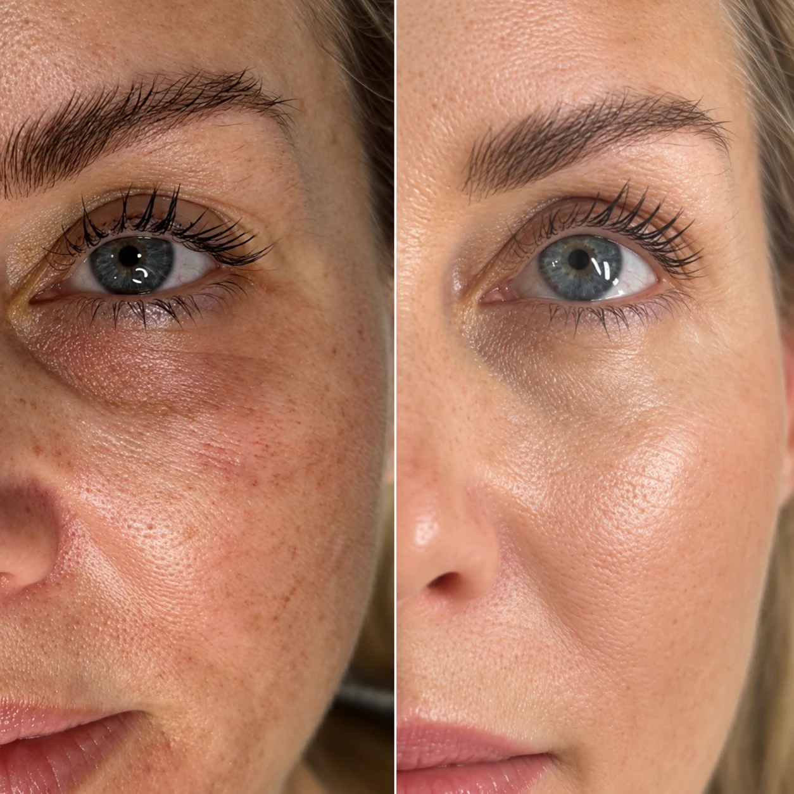
ДоПослеФото без ретуши, с согласия клиента. Потяните бегунок, чтобы сравнить. Второй кадр: assets/before-after/eye-pair-02.jpg.
Складки у внешних уголков видны уже без улыбки, отёчность после сна и экрана держится до обеда. Задача: снять напряжение мышцы и наладить отток, пока морщины не закрепились.
Складки не расправляются после сна, кожа под глазами тоньше и суше. Задача: разгладить, укрепить капилляры и барьер.
Кожа век теряет плотность, верхнее веко опускается. Задача: вернуть каркас и упругость, визуально подтянуть веко.
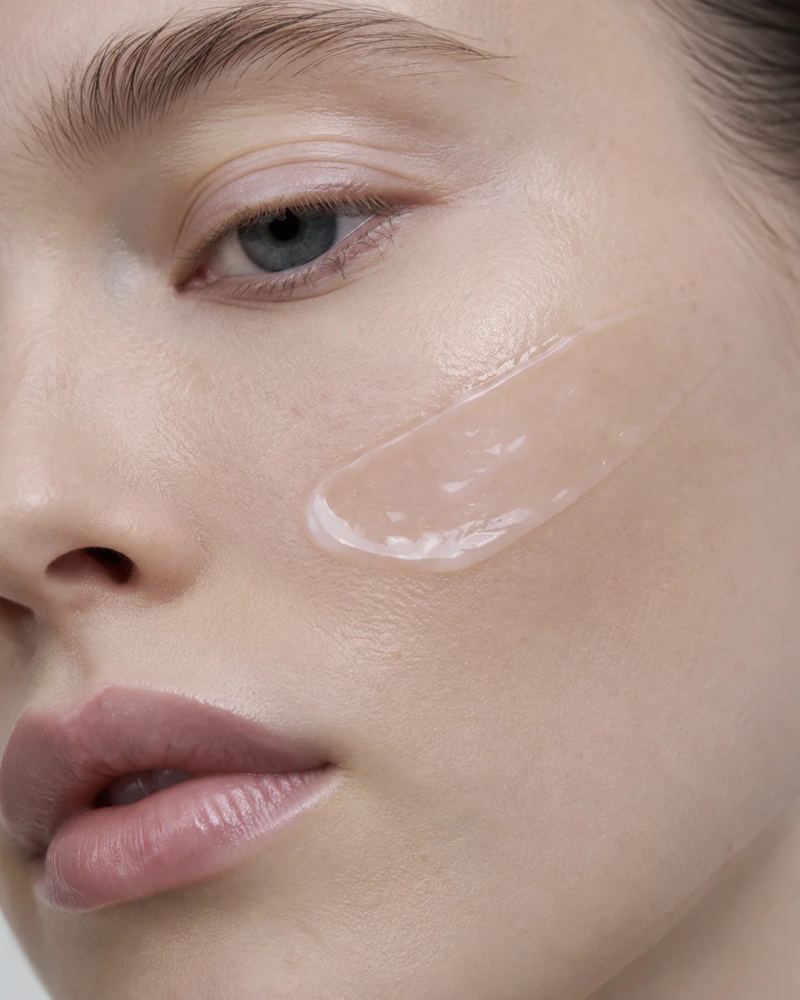
Не наносите на подвижное веко и к самым ресницам. Для лица в коллекции есть крем с пептидами и SYN®-AKE, он работает по тому же принципу.
Восемь активов, у каждого своя задача. Полный список INCI по ссылке ниже.

Снижает сокращение круговой мышцы глаза и разглаживает мимические морщины у внешних уголков.
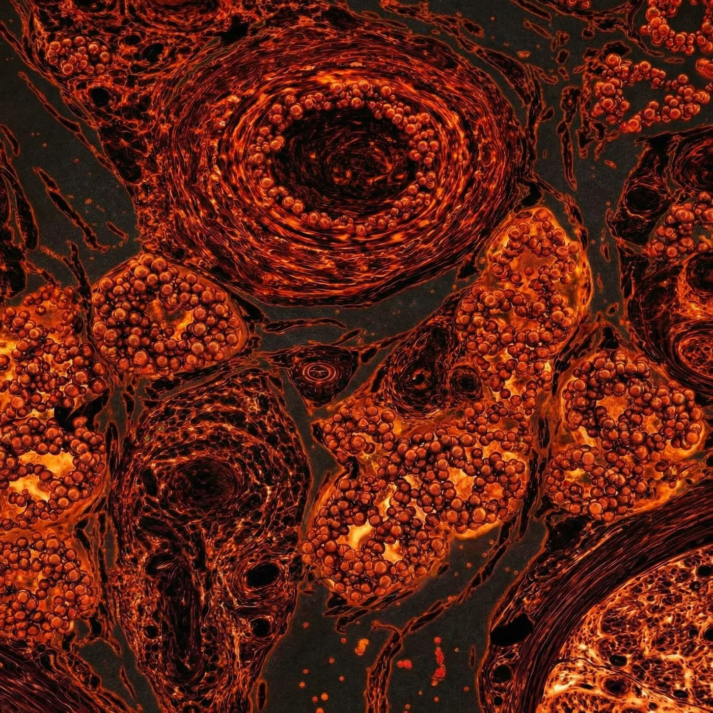
Поддерживает лимфодренаж и микроциркуляцию, уменьшает отёчность и мешки под глазами.
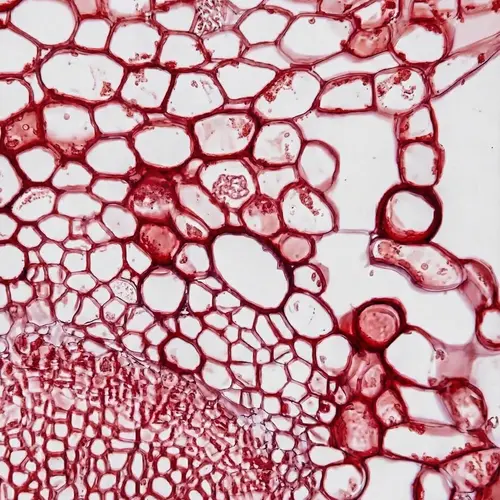
Поддерживает синтез коллагена, повышает плотность и уменьшает дряблость.
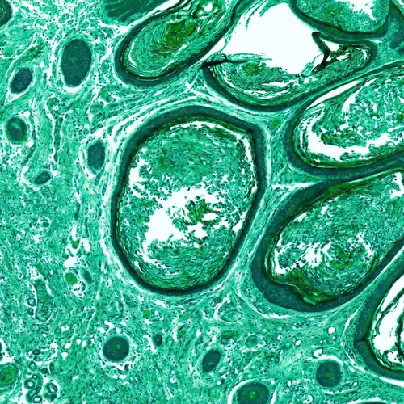
Поддерживает коллаген и гликозаминогликаны, повышая упругость и эластичность.
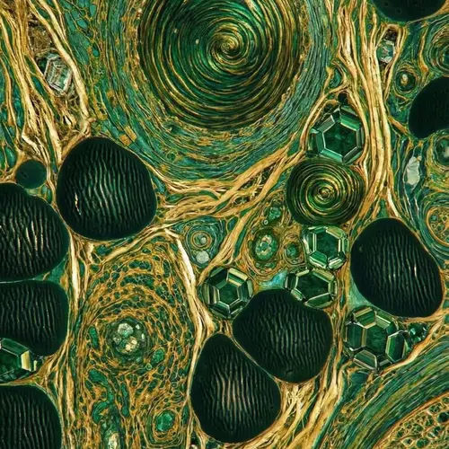
Поддерживает сосудистый тонус и микроциркуляцию, работает с тёмными кругами и отёчностью.
Восстанавливает липидный барьер тонкой кожи, удерживает влагу, улучшает гладкость.
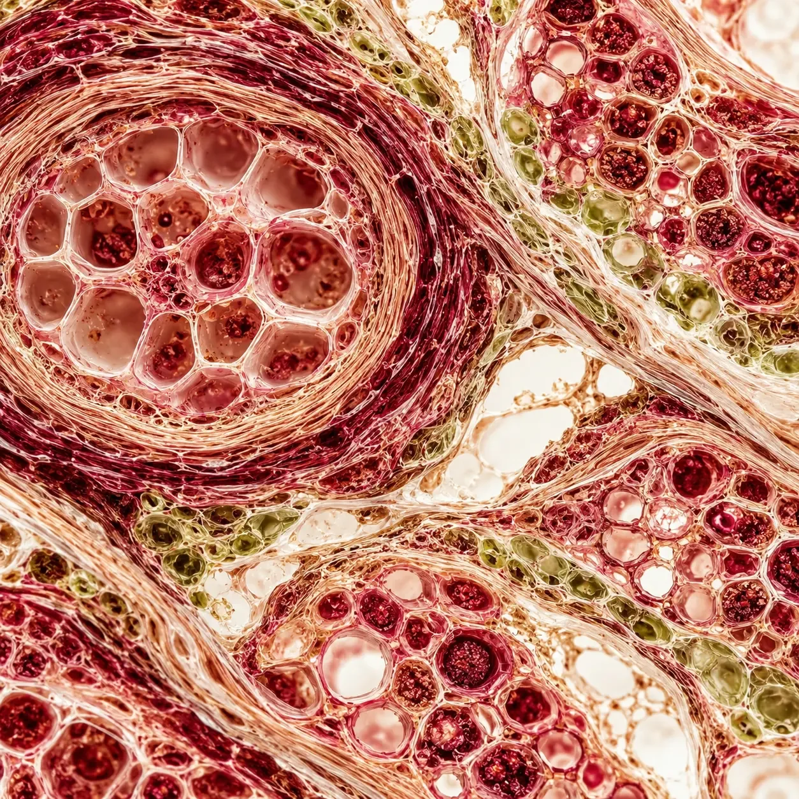
Уменьшает признаки усталости и отёчность, улучшает упругость кожи вокруг глаз.
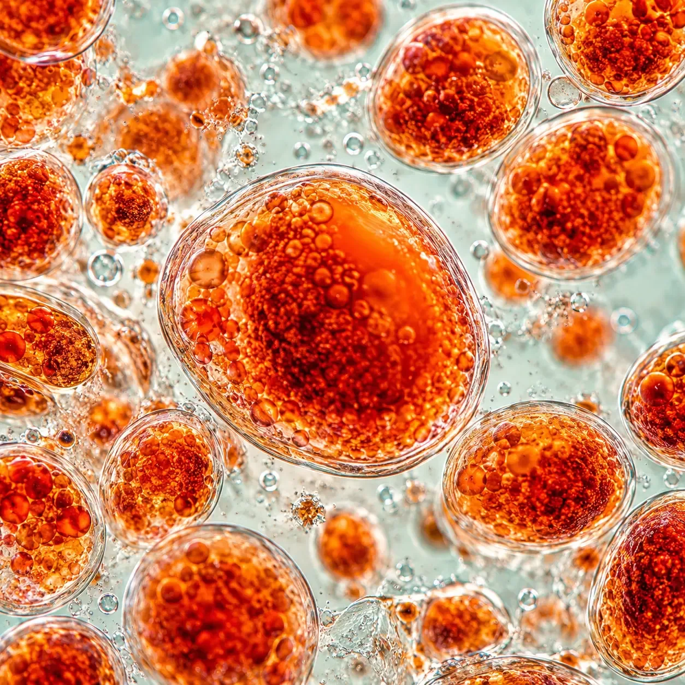
Антиоксидант: защищает от окислительного стресса и фотостарения, выравнивает тон.
Крем для век работает сам по себе. В паре с кремом для лица на том же пептиде он работает лучше.
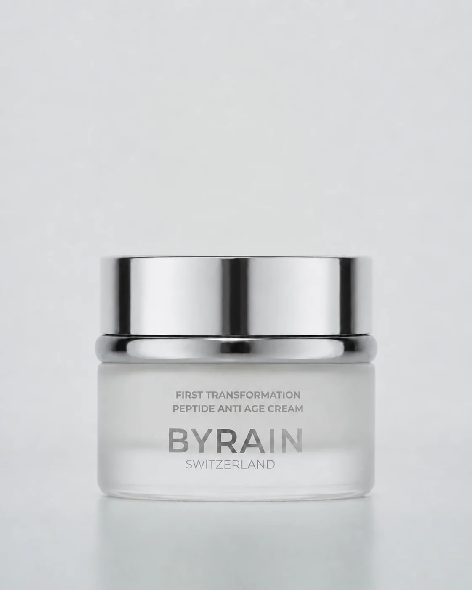
Лицо · утро и вечер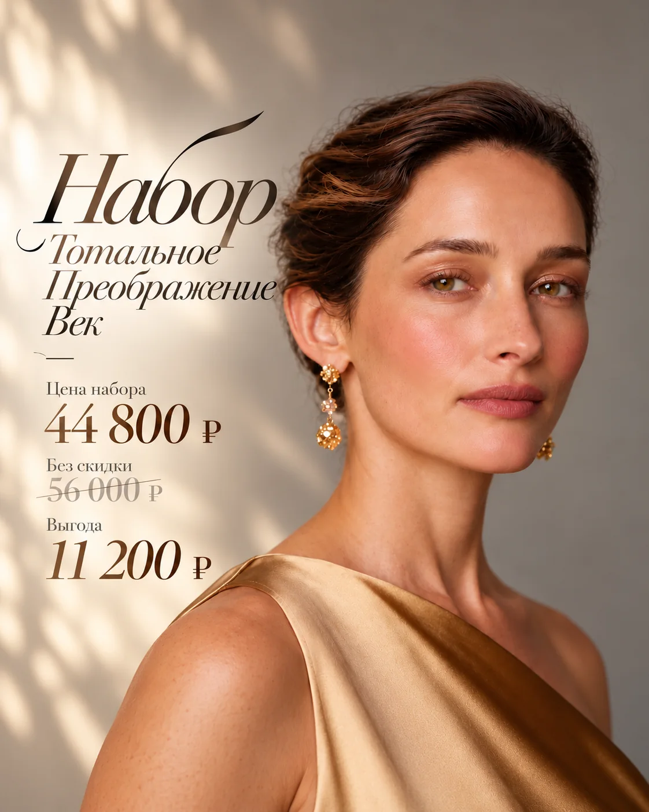
Готовый протокол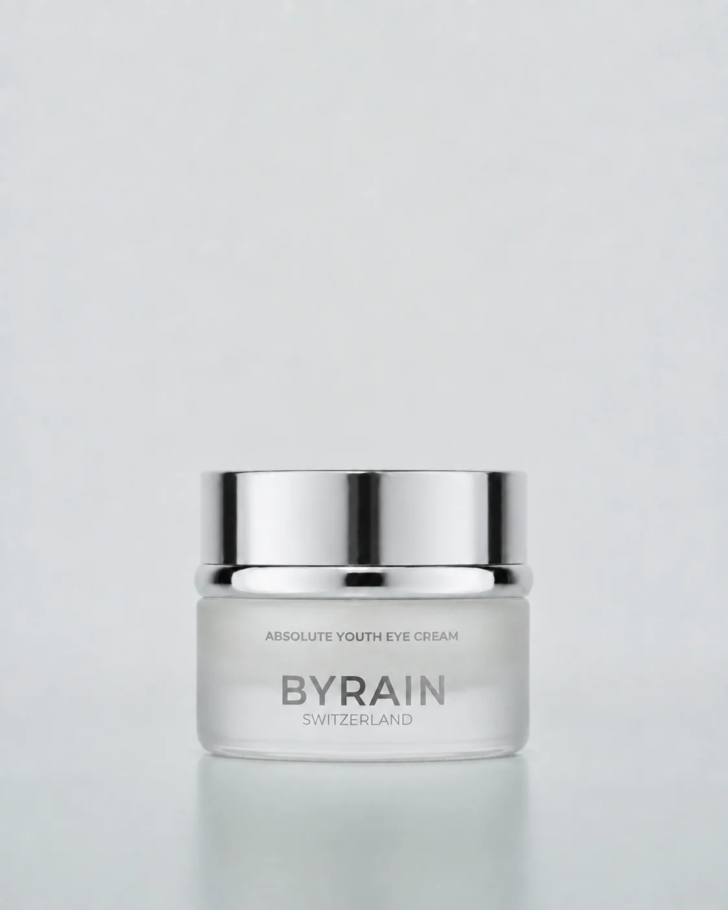
При менопаузе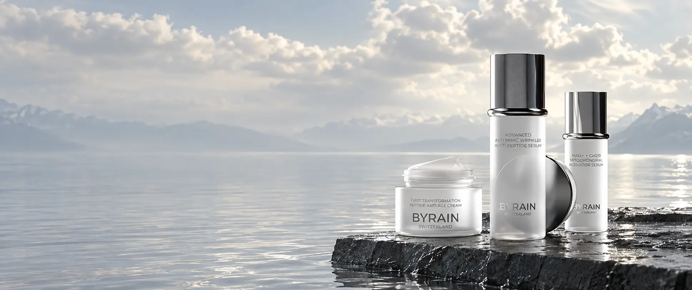
Происхождение, поставщики активов и данные вместо общих слов. Так выбирают косметику те, кто привык спрашивать «что внутри».
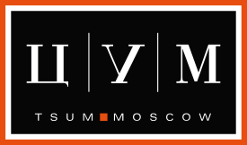
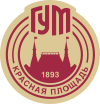
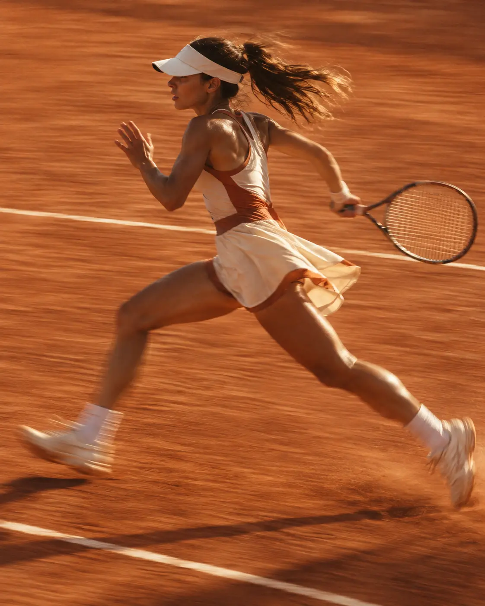
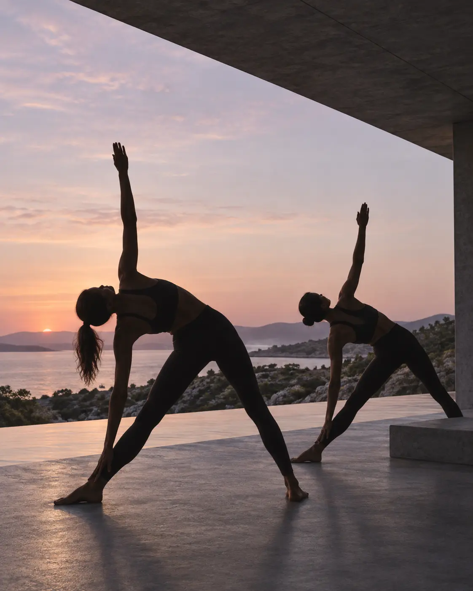
Закрытый клуб: консультация по протоколу, ранний доступ к новым формулам, встречи с косметологами и партнёрами бренда.
То, что вы спросили бы у косметолога перед покупкой.
Количество с рисовое зерно на оба глаза. Безымянным пальцем поставьте точки по косточке глазницы: под глазом от внутреннего уголка к внешнему, над глазом под бровью. Вбейте лёгкими похлопываниями, не растягивая кожу. На подвижное веко и к самым ресницам не наносите.
Патчи дают быстрый эффект на несколько часов: охлаждают и увлажняют. Крем работает с причиной каждый день: SYN®-AKE снижает напряжение мимических мышц, Dipeptide-2 улучшает лимфодренаж, керамиды укрепляют барьер. Патчи можно оставить как экспресс-средство перед событием, крем — как основу.
Кожа вокруг глаз в 3–4 раза тоньше, почти без сальных желёз и всё время в движении. Крем для век рассчитан на неё: лёгкая текстура без тяжёлых масел, активы против отёков и тёмных кругов, которых нет в креме для лица, и концентрации, безопасные для слизистой.
Помогает с отёками и кругами, которые связаны с застоем жидкости и слабыми капиллярами: за это отвечают Dipeptide-2, Palmitoyl Tetrapeptide-7, экстракт альбиции и гесперидин. С тёмными кругами наследственного происхождения или из-за глубокой слёзной борозды крем работает слабее.
С 25 лет, когда появляются первые мимические морщины у внешних уголков глаз и утренняя отёчность перестаёт проходить сама. SYN®-AKE работает с причиной морщин, поэтому крем подходит для профилактики, а после 35–40 разглаживает уже закрепившиеся морщины.
Утром и вечером. Утром крем снимает отёчность после сна и ложится под макияж, вечером работает с морщинами и восстанавливает барьер. Если выбираете одно применение, выбирайте вечер. подтвердить режим у технолога
Синтетический пептид, который повторяет действие пептида из яда храмовой гадюки, самого яда в креме нет. Он снижает сокращение круговой мышцы глаза, поэтому мимические морщины у внешних уголков разглаживаются, а мимика остаётся естественной.
На подвижное веко не наносите, крем может попасть в глаз. Для нависшего века наносите по косточке под бровью лёгкими движениями вверх: пептиды повышают плотность кожи, и веко визуально подтягивается при регулярном применении.
Только настоящие отзывы с именем и датой. Пока их меньше пяти, секция скрыта на сайте.
Место для настоящего отзыва покупателяИмя · город · дата покупки
Место для настоящего отзыва покупателяИмя · город · дата покупки
Место для настоящего отзыва покупателяИмя · город · дата покупки
Первый месяц: меньше отёков и сухости. Третий: плотность и гладкость. Утром и вечером, 30 секунд.